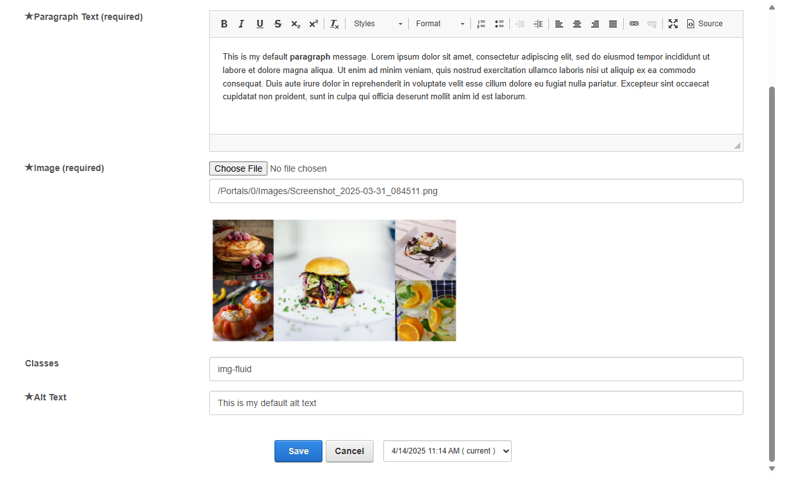

Porto-Paragraphs-Side-Image Documentation
Overview
The Porto-Paragraphs-Side-Image component allows you to create customizable paragraphs with adjustable margins, padding, and rich text formatting. This component is highly flexible and integrates seamlessly with OpenContent.
For more details, check out the Porto-Paragraphs-Side-Image repository on GitHub
Edit
Properties
| Property | Data Type | Description |
|---|---|---|
| Paragraph | string | The paragraph text to display. This field is required and supports rich text formatting. |
Settings

Settings Properties
| Property | Data Type | Description |
|---|---|---|
| Image Position | Select | Defines the image position. Options include Right, Left
|
| MarginTop | Select | Defines the top margin of the paragraph. Options include mt-0, mt-1,
mt-2, mt-3, mt-4, mt-5, and
mt-auto. |
| MarginBottom | Select | Defines the bottom margin of the paragraph. Options include mb-0, mb-1,
mb-2, mb-3, mb-4, mb-5, and
mb-auto. |
| PaddingTop | Select | Defines the top padding of the paragraph. Options include pt-0, pt-1,
pt-2, pt-3, pt-4, pt-5, and
pt-auto. |
| PaddingBottom | Select | Defines the bottom padding of the paragraph. Options include pb-0, pb-1,
pb-2, pb-3, pb-4, pb-5, and
pb-auto. |
Views
Below are examples of the different styles and configurations available for the Porto-Paragraphs-Side-Image component.
Image Position: Right
Image Position: Left
Notes
Note: Ensure that the Paragraph field is set correctly to display the
desired text. Additionally, verify that the Settings Properties match your design
requirements.